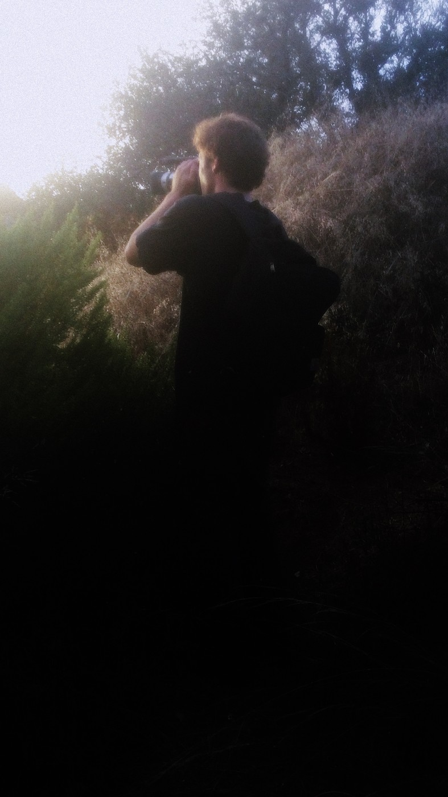

taj

artist statement artist statement artist statement artist statement artist statement artist statement artist statement artist statement artist statement artist statement artist statement artist statement artist statement artist statement artist statement artist statement artist statement artist statement artist statement artist statement artist statement artist statement artist statement artist statement artist statement artist statement artist statement artist statement artist statement artist statement artist statement artist statement artist statement artist statement artist statement artist statement artist statement artist statement artist statement artist statement artist statement artist statement artist statement artist statement artist statement artist statement